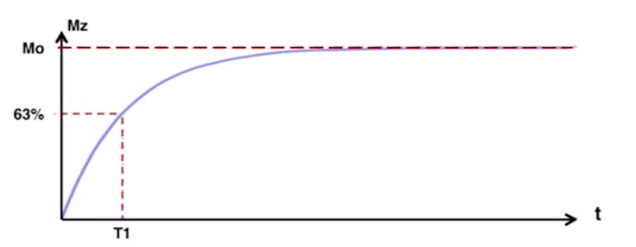
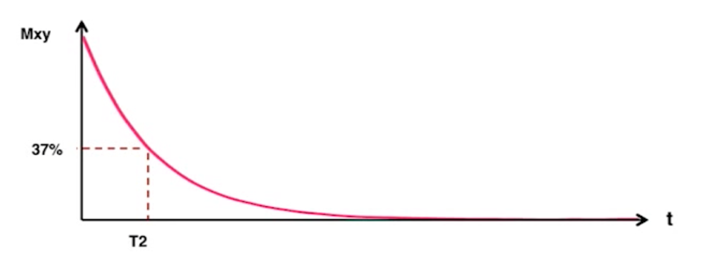

Video
Questions
Longitudinal Relaxation

Q. If a tissue type is said to have a faster longitudinal relaxation time, does it imply that its T1 value is higher or lower?
A. Lower, because T1 is a time measurement; if it relaxes faster then it takes less time.
Transverse Relaxation

Q. If a tissue type is said to have a faster transverse decay, does it imply that its T2 value is higher or lower?
A. Again, lower, because T2 is a time measurement; if it relaxes faster then it takes less time.
Longitudinal Magnetization and Tissue Types

Q. If a new tissue type is said to have a faster longitudinal magnetization relaxation time than that of all the three tissue types shown, where do you expect to see the line of that new tissue type lies (i.e., above or below)?
A. Above, because it would reach the relaxation signal in less time. In this graph, slower relaxation puts curves below others.
Q. Suppose TR is set to 1000. Consider two brain areas A and B. A is composed of 80% white matter and 20% CSF. B is composed of 80% gray matter and 20% CSF. Which brain area may look brighter in an image that emphasizes T1 characteristics (i.e., T1 weighted image)? Why?
A. I think B would look brighter, because gray matter's T1 is 1000, which equals TR, and B is composed of mostly gray matter while A has none.
Q. Now suppose we increase TR from 1000 to 3000. Does the difference in brightness between A and B increase or decrease? Why?
A. The difference in brightness decreases because A and B have the same amount of CSF, so they should become more similar.